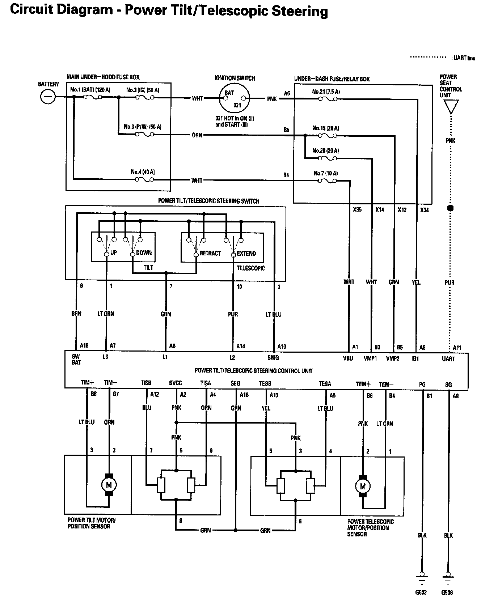
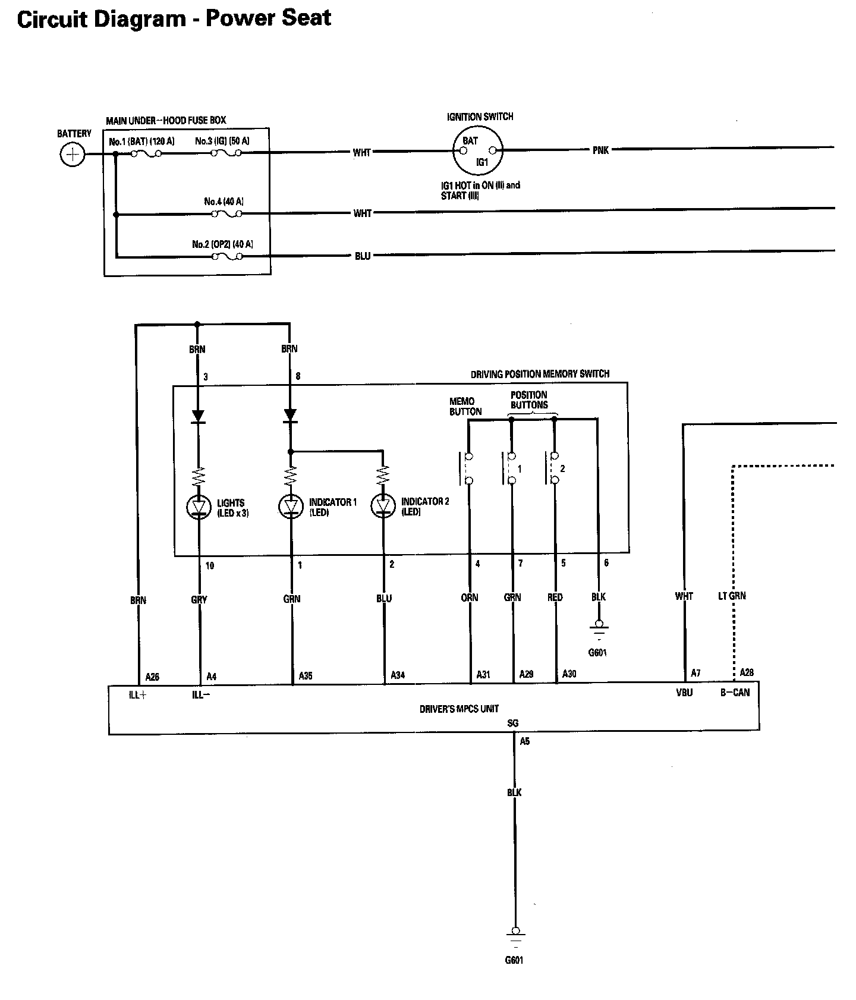
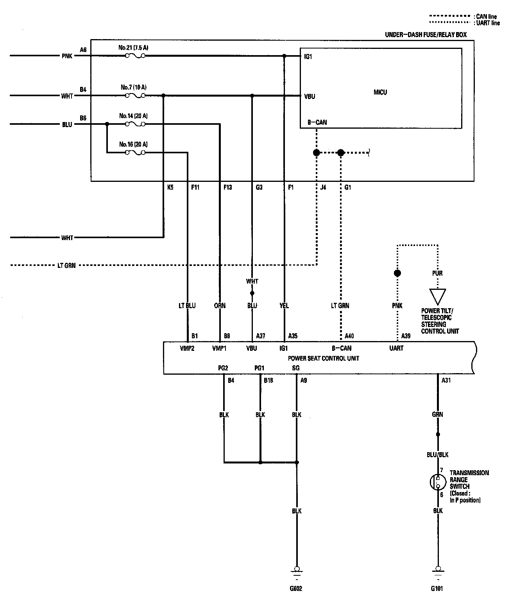
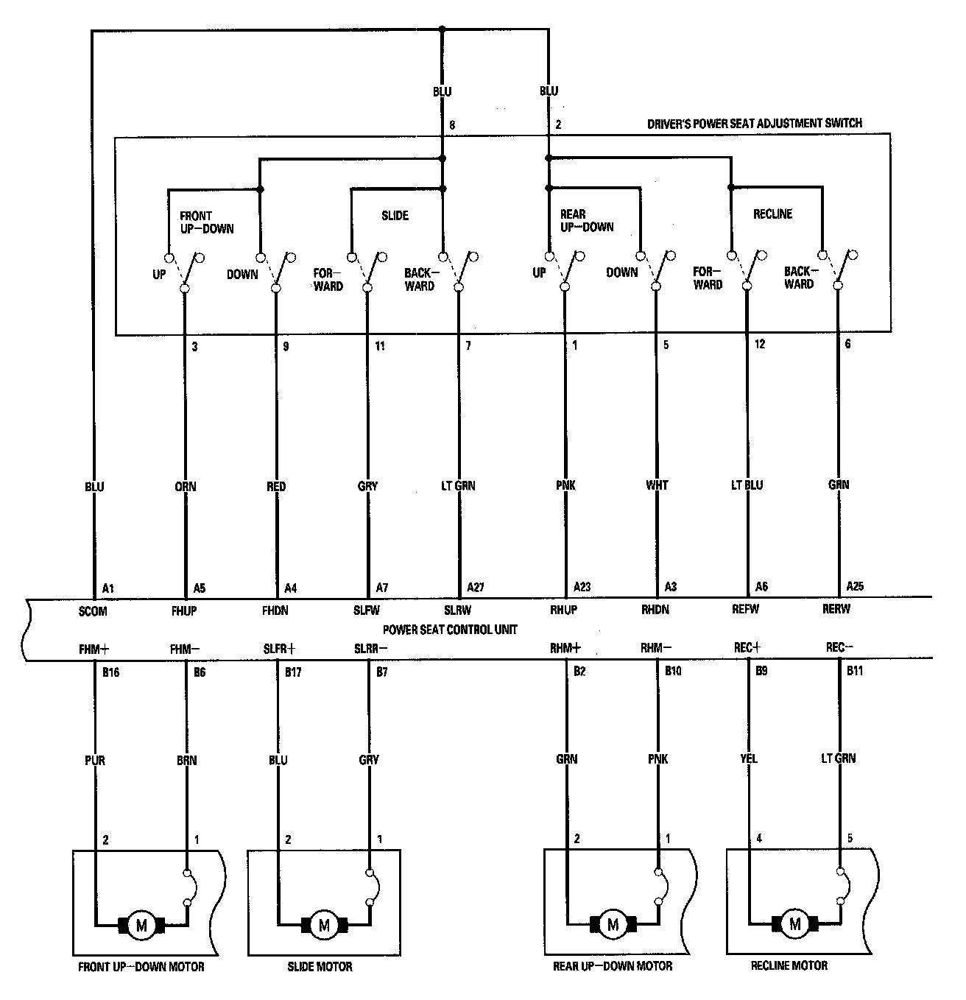
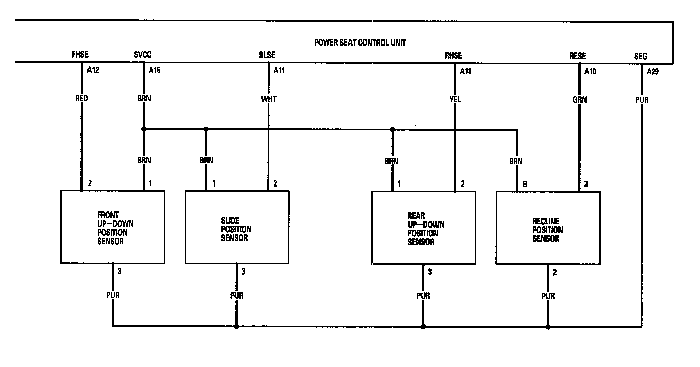
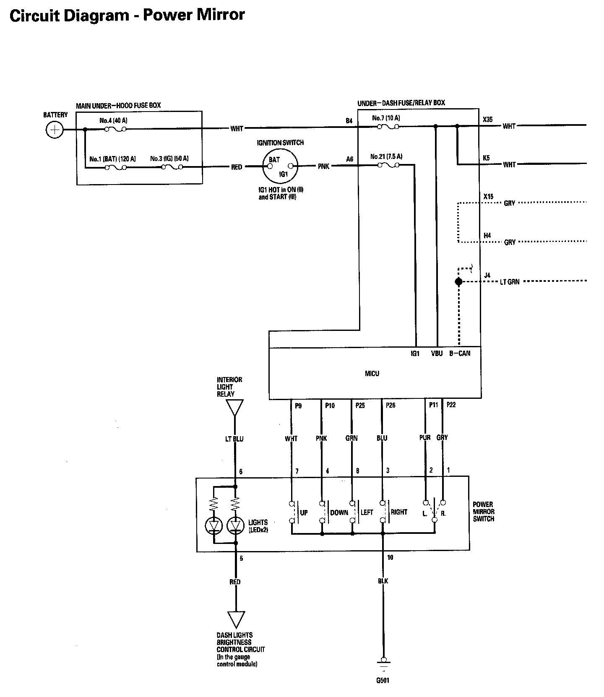
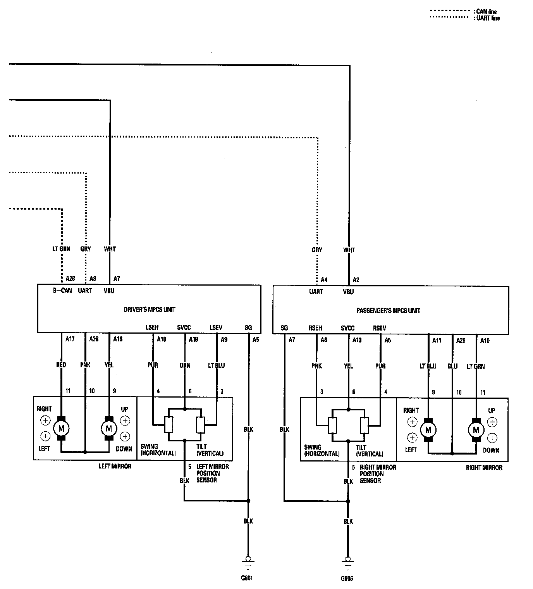

Driving Position Memory System (DPMS) Circuit Diagram
Driving Position Memory System (DPMS) Circuit Diagram - Power Tilt/Telescopic Steering:

Driving Position Memory System (DPMS) Circuit Diagram - Power Seat Part 1:

Driving Position Memory System (DPMS) Circuit Diagram - Power Seat Part 2:

Driving Position Memory System (DPMS) Circuit Diagram - Power Seat Part 3:

Driving Position Memory System (DPMS) Circuit Diagram - Power Seat Part 4:

Driving Position Memory System (DPMS) Circuit Diagram - Power Mirror Part 1:

Driving Position Memory System (DPMS) Circuit Diagram - Power Mirror Part 2:
